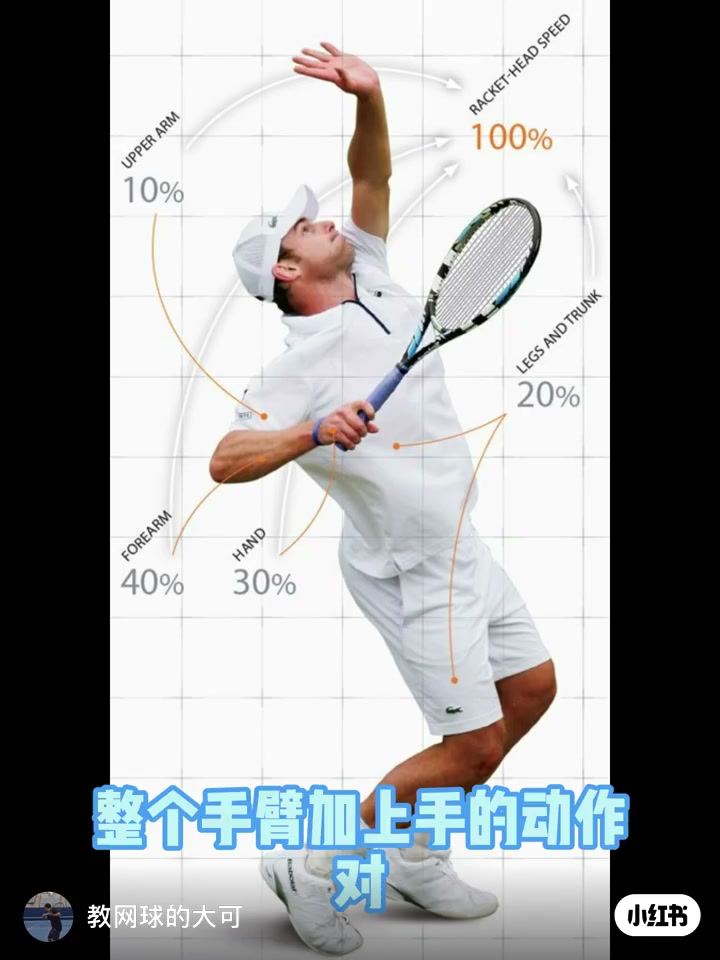
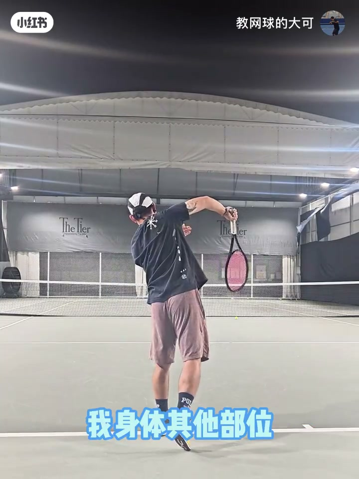
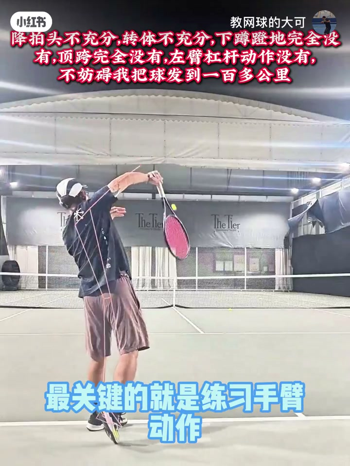

内容要点
教练大可用一张数据图和几记「几乎只动肩臂」的发球，把发球练习的优先级说死：手臂加手的动作约占拍头速度的 80%；双腿虽是动力来源，但纯靠肩与手臂也能发很快，下肢多是锦上添花。对 3.5–4.0 水平，球速往往够用，更关键的是稳定与落点——所以手臂没做对，下蹲、顶胯、旋转全都失去意义。
知识结构
手臂+手动作对拍头速度影响约 80%；动力源在腿，但肩臂即可发快，下肢是锦上添花。
几记发球几乎只动肩臂；该球速对 3.5–4.0 比赛够用，更看稳定性与落点。
练发球最关键是手臂；手臂不行，下蹲/顶胯/旋转都没意义。
发球门槛先过手臂：把肩关节与手臂动作练到能独立贡献绝大部分拍头速度，再叠加下肢。中级业余赛里，稳定与落点往往比再堆一点腿部动力更值钱。
00:00-00:18手臂占拍头速度约 80%，下肢是锦上添花
开场引用示意图：发球中整个手臂加上手的动作，对拍头速度的影响约占 80%。动力来源虽是双腿，但纯靠肩关节与手臂也能把球发很快——下肢动作是锦上添花。

00:18-00:31演示：几乎只动肩臂，3.5–4.0 球速够用
教练演示几记发球：除肩与手臂外，身体其他部位几乎不动。这个球速对 NTRP 3.5–4.0 比赛已足够；他更强调稳定性与落点，而不是一味追速。

00:31-00:42练习优先级：手臂做对，下蹲顶胯旋转才有意义
结论很硬：练网球发球时最关键的就是手臂动作。手臂练不好，下蹲、顶胯、旋转等身体动作就全都失去了意义。

完整转录（15段）
以下文本由 Whisper medium 模型自动转录，可能存在少量识别误差，已尽可能修正。
不知道有没有看过这张图,在发球中整个手臂加上手的动作
对拍头速度的影响占到了80%
也就是说虽然我们发球动作的动力来源是双腿
但是我们纯靠肩关节以及手臂动作就可以把球发的很快
下肢的所有动作都只是锦上添花
看看我这几个发球,除了我肩部和手臂的动作
我身体其他部位几乎没有动作
动也动得很少
这个球速对于3.5到4.0的比赛来说是足够用的
更重要的是发球的稳定性以及落点
所以我要说的是当你去练习网球的发球时
最关键的就是练习手臂动作
手臂动作练不好,那么你身体的其他动作
比如说下蹲、顶跨、旋转等等
就全都失去了意义